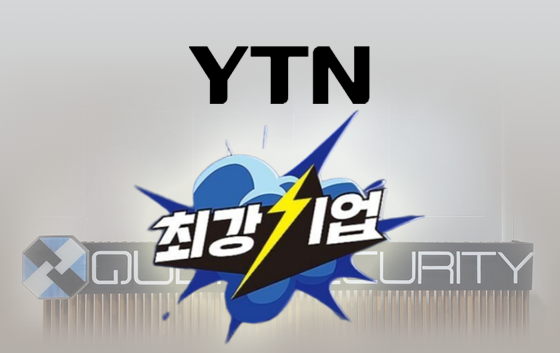

9개 자료


DEMO
AGENT
DOCS
START
REPORT
CHECK
검색 조건에 맞는 자료가 없습니다. 다른 검색어나 유형을 선택해 주세요.
외부 영상과 공식 문서는 인터넷 연결이 필요합니다. 자료의 제품 화면·설명은 게시 당시 버전 기준일 수 있으며, 도입 시 제공 범위를 확인합니다.
우리 기업의 보안 운영,
하나의 플랫폼에서 시작하세요.
보호 대상과 운영 환경에 맞는 PLURA-XDR 도입 방식을 함께 설계합니다.